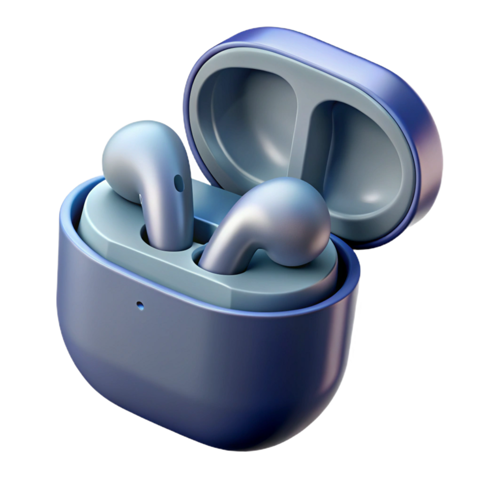

About Bluetooth 5.4 Wireless Earphones X1
Bluetooth 5.4 Wireless Earphones X1 is a premium true wireless audio solution designed to deliver exceptional sound quality, enhanced connectivity, and all-day comfort. Equipped with the latest Bluetooth 5.4 technology, the earphones deliver stable wireless transmission, low latency, and efficient power consumption for a seamless listening experience.
The earphones feature Active Noise Cancellation (ANC) technology that helps reduce ambient noise, allowing users to enjoy music, calls, and entertainment with greater clarity. High-resolution audio support, spatial audio tracking technology, and advanced audio codecs provide immersive, detailed sound reproduction that closely resembles wired audio performance.
Designed for everyday use, the Bluetooth 5.4 Wireless Earphones X1 offer up to 60 hours of total battery life with the charging case and feature a sweat- and water-resistant design suitable for workouts, commuting, travel, and daily activities.
Suitable for users of all ages, the earphones combine premium sound performance, ergonomic comfort, and durable construction in a compact wireless design.

Product Claims
- Active Noise Cancellation (ANC)
- Up to 60 hours of battery life
- High-resolution audio support
- Spatial audio tracking technology
- Support for LDAC and aptX audio codecs
- High sweat and water resistance
- Premium wireless audio performance
Recommended Usage
Use the earphones for music playback, voice calls, multimedia entertainment, fitness activities, commuting, travel, and everyday listening. Recharge using the supplied USB-C charging cable when battery levels are low.
Recommended Service Life
3 years from the manufacturing date under normal usage conditions
Storage Conditions
Store at a stable room temperature, ensure earbuds are completely dry and free of sweat or rain before placing them into a case to prevent electrical shorts and corrosion.